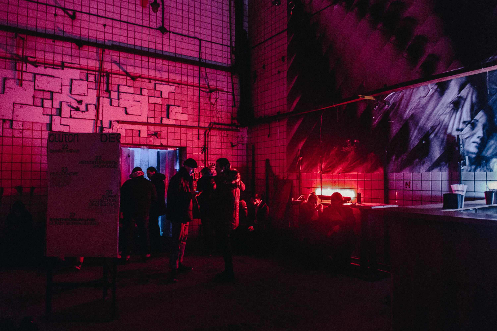

location
Mumble is a vibrant speakeasy nestled under a local San Luis Obispo coffee shop. The entrance is accessed through a secret door whose location is only known by returning members.
address
609 Speakeasy Ave, San Luis Obispo CA
hours
Sun-Mon 5pm-11pm | Tues-Sat 7pm-1am